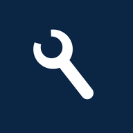

0Mesin terpantau
0Waktunya maintenance
0Catatan riwayat
Catat Maintenance
Ketik nomor seri mesin — saran mesin muncul sambil kamu mengetik. Tanggal terisi otomatis hari ini, bisa diubah kalau catatnya terlambat.
—

Pencatat maintenance mesin hemodialisa
Ketik nomor seri mesin — saran mesin muncul sambil kamu mengetik. Tanggal terisi otomatis hari ini, bisa diubah kalau catatnya terlambat.
Kalau ada mesin yang belum terdaftar di daftar mesin.
Mesin yang sudah dihapus beserta riwayatnya. Hanya untuk dilihat — penghapusan yang terjadi sebelum fitur ini dibuat tidak tercatat di sini.
Mesin baru yang ditambahkan di Mayapada, urut dari yang terbaru.
File tersimpan di server, jadi tidak hilang bila HP rusak dan bisa dilihat teman yang memakai aplikasi yang sama. Ketuk rumah sakit untuk membuka isinya.